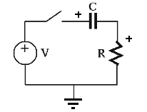

Next: AC Circuit Analysis III
Up: Chapter 3: AC Circuit
Previous: AC Circuit Analysis I
If we need to find out the transient response of an AC circuit to a certain
input applied at time moment  (e.g., after a switch is closed), then
the phasor method discussed above is no longer sufficient. Now the DE
describing the circuit will have to be solved to obtain the complete solution
including the homogeneous (transient) solution as well as the particular
(steady state) solution.
(e.g., after a switch is closed), then
the phasor method discussed above is no longer sufficient. Now the DE
describing the circuit will have to be solved to obtain the complete solution
including the homogeneous (transient) solution as well as the particular
(steady state) solution.
As a simple example, the RC and RL circuits shown below are composed of
a resistor  and capacitor
and capacitor  or an inductor
or an inductor  in series with an
external voltage input
in series with an
external voltage input  , which is turned on at , wither by a
switch or a step voltage , such as a square wave input. Any of the
variables
, which is turned on at , wither by a
switch or a step voltage , such as a square wave input. Any of the
variables  ,
,  ,
,  and
and  can be considered as the
circuit's response to this input.
can be considered as the
circuit's response to this input.

- The RC circuit can be described by KVL:
where  is the time constant of the system with the dimension of time:
is the time constant of the system with the dimension of time:
- Similarly, for the RL circuit we have:
where  is the time constant with the dimension of time:
is
is the time constant with the dimension of time:
is
![$[L]=[V][T]/[I]=[R][T]$](img216.png) and the dimension of
and the dimension of  is:
is:
In both cases, the polarity of  is positive on top, and the polarities of
is positive on top, and the polarities of
 and are positive on the left.
and are positive on the left.
Homogeneous Solution
When the external input is zero  , the DE is homogeneous (zero on the
right-hand side):
, the DE is homogeneous (zero on the
right-hand side):
The solution of this homogeneous equation needs to be a function whose
derivatives take the same form as the function itself, i.e., it needs
to be an exponential function  . Substituting this and its
derivative
. Substituting this and its
derivative
 into the DE, we get
into the DE, we get
As we are not interested in the trivial solution  , we must have
, we must have
i.e.,
 for
for  . The constant
. The constant  can be obtained by
the initial condition, the voltage on at :
can be obtained by
the initial condition, the voltage on at :
and the homogeneous solution is completely determined:
The current through and is
The voltage across is
This result can be verified:
 .
.
Next: AC Circuit Analysis III
Up: Chapter 3: AC Circuit
Previous: AC Circuit Analysis I
Ruye Wang
2014-10-05
![\begin{displaymath}[RC]=\frac{[V]}{[I]}\frac{[Q]}{[V]}=\frac{[Q]}{[I]}=[T]
\end{displaymath}](img213.png)
![\begin{displaymath}[L/R]=\frac{[V][T]}{[I]}\frac{1}{[R]}=\frac{[R][T]}{[R]}=[T]
\end{displaymath}](img218.png)